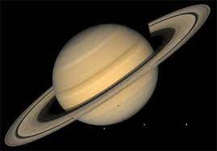

the Solar system
The Solar System is the gravitationally bound system of the Sun and the objects that orbit it, either directly or indirectly. Of the objects that orbit the Sun directly, the largest are the eight planets, with the remainder being smaller objects, the dwarf planets and small Solar System bodies.

the Sun
The Sun is the star at the center of the Solar System. It is a nearly perfect sphere of hot plasma, heated to incandescence by nuclear fusion reactions in its core, radiating the energy mainly as visible light and infrared radiation. It is by far the most important source of energy for life on Earth. Its diameter is about 1.39 million kilometres (864,000 miles), or 109 times that of Earth. Its mass is about 330,000 times that of Earth, and accounts for about 99.86% of the total mass of the Solar System. Roughly three quarters of the Sun's mass consists of hydrogen (~73%); the rest is mostly helium (~25%), with much smaller quantities of heavier elements, including oxygen, carbon, neon, and iron.[21]
The Sun is a G-type main-sequence star (G2V) based on its spectral class.

Mercury
Mercury is the smallest and closest planet to the Sun in the Solar System. Its orbit around the Sun takes 87.97 Earth days, the shortest of all the planets in the Solar System. It is named after the Roman god Mercurius (Mercury), god of commerce, messenger of the gods, and mediator between gods and mortals, corresponding to the Greek god Hermes .
Like Venus, Mercury orbits the Sun within Earth's orbit as an inferior planet, and its apparent distance from the Sun as viewed from Earth never exceeds 28°. This proximity to the Sun means the planet can only be seen near the western horizon after sunset or the eastern horizon before sunrise, usually in twilight. At this time, it may appear as a bright star-like object, but is often far more difficult to observe than Venus. The planet telescopically displays the complete range of phases, similar to Venus and the Moon, as it moves in its inner orbit relative to Earth, which recurs over its synodic period of approximately 116 days.

Venus
Venus is the second planet from the Sun. It is named after the Roman goddess of love and beauty. As the brightest natural object in Earth's night sky after the Moon, Venus can cast shadows and can be, on rare occasion, visible to the naked eye in broad daylight.Venus lies within Earth's orbit, and so never appears to venture far from the Sun, either setting in the west just after dusk or rising in the east a little while before dawn. Venus orbits the Sun every 224.7 Earth days. With a rotation period of 243 Earth days, it takes longer to rotate about its axis than any other planet in the Solar System by far, and does so in the opposite direction to all but Uranus (meaning the Sun rises in the west and sets in the east). Venus does not have any moons, a distinction it shares only with Mercury among the planets in the Solar System.

Earth
Earth is the third planet from the Sun and the only astronomical object known to harbor life. About 29% of Earth's surface is land consisting of continents and islands. The remaining 71% is covered with water, mostly by oceans, seas, gulfs, and other salt water bodies, but also by lakes, rivers, and other fresh water, which together constitute the hydrosphere. Much of Earth's polar regions are covered in ice. Earth's outer layer is divided into several rigid tectonic plates that migrate across the surface over many millions of years. Earth's interior remains active with a solid iron inner core, a liquid outer core that generates Earth's magnetic field, and a convecting mantle that drives plate tectonics.
Earth's atmosphere consists mostly of nitrogen and oxygen. More solar energy is received by tropical regions than polar regions, and is redistributed by atmospheric and ocean circulation. Greenhouse gases also play an important role in regulating the surface temperature. A region's climate is not only determined by latitude, but also by elevation, and by proximity to moderating oceans, among other factors. Extreme weather, such as tropical cyclones and heat waves, occurs in most areas and has a large impact on life.

Mars
Mars is the fourth planet from the Sun and the second-smallest planet in the Solar System, being larger than only Mercury. In English, Mars carries the name of the Roman god of war and is often referred to as the "Red Planet".The latter refers to the effect of the iron oxide prevalent on Mars's surface, which gives it a reddish appearance distinctive among the astronomical bodies visible to the naked eye. Mars is a terrestrial planet with a thin atmosphere, with surface features reminiscent of the impact craters of the Moon and the valleys, deserts and polar ice caps of Earth.
The days and seasons are comparable to those of Earth, because the rotational period as well as the tilt of the rotational axis relative to the ecliptic plane are similar. Mars is the site of Olympus Mons, the largest volcano and highest known mountain on any planet in the Solar System, and of Valles Marineris, one of the largest canyons in the Solar System. The smooth Borealis basin in the Northern Hemisphere covers 40% of the planet and may be a giant impact feature

jupiter
Jupiter is the fifth planet from the Sun and the largest in the Solar System. It is a gas giant with a mass one-thousandth that of the Sun, but two and a half times that of all the other planets in the Solar System combined. Jupiter is the third-brightest natural object in the Earth's night sky after the Moon and Venus. It has been observed since pre-historic times and is named after the Roman god Jupiter.
Jupiter is primarily composed of hydrogen, but helium comprises one quarter of its mass and one tenth of its volume. It likely has a rocky core of heavier elements, but like the other giant planets, Jupiter lacks a well-defined solid surface. The on-going contraction of its interior generates heat greater than the amount received from the Sun. Because of its rapid rotation, the planet's shape is that of an oblate spheroid; it has a slight but noticeable bulge around the equator. The outer atmosphere is visibly segregated into several bands at different latitudes, with turbulence and storms along their interacting boundaries. A prominent result of this is the Great Red Spot, a giant storm that is known to have existed since at least the 17th century, when it was first seen by telescope.

saturn
Saturn is the sixth planet from the Sun and the second-largest in the Solar System, after Jupiter. It is a gas giant with an average radius of about nine times that of Earth.[20][21] It only has one-eighth the average density of Earth; however, with its larger volume, Saturn is over 95 times more massive.[22][23][24] Saturn is named after the Roman god of wealth and agriculture; its astronomical symbol (♄) represents the god's sickle. The Romans named the seventh day of the week Saturday, Sāturni diēs ("Saturn's Day") no later than the 2nd century for the planet Saturn.[25]
Saturn's interior is most likely composed of a core of iron–nickel and rock (silicon and oxygen compounds). Its core is surrounded by a deep layer of metallic hydrogen, an intermediate layer of liquid hydrogen and liquid helium, and finally a gaseous outer layer. Saturn has a pale yellow hue due to ammonia crystals in its upper atmosphere. An electrical current within the metallic hydrogen layer is thought to give rise to Saturn's planetary magnetic field, which is weaker than the Earth's, but which has a magnetic moment 580 times that of Earth due to Saturn's larger size. Saturn's magnetic field strength is around one-twentieth of Jupiter's.

Uranus
Uranus is the seventh planet from the Sun. Its name is a reference to the Greek god of the sky, Uranus, who, according to Greek mythology, was the grandfather of Zeus (Jupiter) and father of Cronus (Saturn). It has the third-largest planetary radius and fourth-largest planetary mass in the Solar System. Uranus is similar in composition to Neptune, and both have bulk chemical compositions which differ from that of the larger gas giants Jupiter and Saturn. For this reason, scientists often classify Uranus and Neptune as "ice giants" to distinguish them from the other gas giants. Uranus's atmosphere is similar to Jupiter's and Saturn's in its primary composition of hydrogen and helium, but it contains more "ices" such as water, ammonia, and methane, along with traces of other hydrocarbons. It has the coldest planetary atmosphere in the Solar System, with a minimum temperature of 49 K (−224 °C; −371 °F), and has a complex, layered cloud structure with water thought to make up the lowest clouds and methane the uppermost layer of clouds. The interior of Uranus is mainly composed of ices and rock.

Neptune
Neptune is the eighth and farthest-known Solar planet from the Sun. In the Solar System, it is the fourth-largest planet by diameter, the third-most-massive planet, and the densest giant planet. It is 17 times the mass of Earth, slightly more massive than its near-twin Uranus. Neptune is denser and physically smaller than Uranus because its greater mass causes more gravitational compression of its atmosphere. The planet orbits the Sun once every 164.8 years at an average distance of 30.1 AU (4.5 billion km; 2.8 billion mi). It is named after the Roman god of the sea and has the astronomical symbol ♆, a stylised version of the god Neptune's trident.
Neptune is not visible to the unaided eye and is the only planet in the Solar System found by mathematical prediction rather than by empirical observation. Unexpected changes in the orbit of Uranus led Alexis Bouvard to deduce that its orbit was subject to gravitational perturbation by an unknown planet. After Bouvard's death, the position of Neptune was predicted from his observations, independently, by John Couch Adams and Urbain Le Verrier. Neptune was subsequently observed with a telescope on 23 September 1846 by Johann Galle within a degree of the position predicted by Le Verrier.